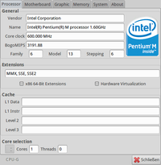

CPU-G
Dieser Artikel wurde für die folgenden Ubuntu-Versionen getestet:
Ubuntu 16.04 Xenial Xerus
Ubuntu 14.04 Trusty Tahr
Zum Verständnis dieses Artikels sind folgende Seiten hilfreich:
CPU-G  ist ein Werkzeug, mit dem wie bei CPU-Z
ist ein Werkzeug, mit dem wie bei CPU-Z  die Daten des Prozessors und andere Hardware-Informationen ausgelesen werden können. Das Programm greift dazu auf die Informationen der Systemdateien /proc/cpuinfo, /proc/meminfo und /sys/devices/virtual/dmi/id/ zurück, erreicht aber nicht den Funktionsumfang des Originals.
die Daten des Prozessors und andere Hardware-Informationen ausgelesen werden können. Das Programm greift dazu auf die Informationen der Systemdateien /proc/cpuinfo, /proc/meminfo und /sys/devices/virtual/dmi/id/ zurück, erreicht aber nicht den Funktionsumfang des Originals.
Alternativen sind die Programme Sysinfo, HardInfo und insbesondere I-Nex. Alle drei berücksichtigen auch weitere Systemkomponenten wie Grafikkarten, Massenspeicher, Schnittstellen etc.
Installation¶
 Das Programm ist nicht in den offiziellen Paketquellen enthalten. Daher muss man auf ein "Personal Package Archiv" (PPA) [1] oder Fremdpakete ausweichen.
Das Programm ist nicht in den offiziellen Paketquellen enthalten. Daher muss man auf ein "Personal Package Archiv" (PPA) [1] oder Fremdpakete ausweichen.
PPA¶
Die aktuelle Version steht ab Ubuntu 14.04 über ein PPA zur Verfügung. In diesem PPA sind zahlreiche weitere Programme enthalten. Um Problemen mit den offiziellen Paketquellen vorzubeugen, wird empfohlen, das PPA nach der Installation wieder zu deaktivieren oder Apt-Pinning zu nutzen.
Adresszeile zum Hinzufügen des PPAs:
ppa:atareao/atareao
Hinweis!
Zusätzliche Fremdquellen können das System gefährden.
Ein PPA unterstützt nicht zwangsläufig alle Ubuntu-Versionen. Weitere Informationen sind der  PPA-Beschreibung des Eigentümers/Teams atareao zu entnehmen.
PPA-Beschreibung des Eigentümers/Teams atareao zu entnehmen.
Damit Pakete aus dem PPA genutzt werden können, müssen die Paketquellen neu eingelesen werden.
Nach dem Aktualisieren der Paketquellen kann folgendes Paket installiert [2] werden:
cpu-g (ppa)
 mit apturl
mit apturl
Paketliste zum Kopieren:
sudo apt-get install cpu-g
sudo aptitude install cpu-g
Fremdpaket¶
Wer davor zurück scheut, wegen eines einzelnes Pakets gleich ein komplettes PPA einzubinden (und anschließend wieder zu entfernen), kann sich auch ein einzelnes Fremdpaket  herunterladen und manuell [3] installieren. Der Paketname lautet: cpu-g_VERSIONubuntu0_all.deb. Nachteilig ist, dass man sich um Programmaktualisierungen in Zukunft selbst kümmern muss.
herunterladen und manuell [3] installieren. Der Paketname lautet: cpu-g_VERSIONubuntu0_all.deb. Nachteilig ist, dass man sich um Programmaktualisierungen in Zukunft selbst kümmern muss.
Hinweis!
Fremdpakete können das System gefährden.
Bedienung¶
 Nach der Installation steht das Programm bei Ubuntu-Varianten mit einem Anwendungsmenü unter "System -> CPU-G" zur Verfügung [4]. Zur Benutzung selbst gibt es nicht viel zu erklären. Die Informationen sind auf sechs Registerkarten verteilt:
"Processor" - CPU (Central Processing Unit)
"Motherboard" - Chipset- und BIOS-Informationen
"Graphics" - Grafikkarte
"Memory" - Arbeitsspeicher
"System" - Rechnername, Systemarchitektur, Kernel, Ubuntu-Version
"About" - Programminformationen
Leider können diese Informationen weder gespeichert noch gedruckt werden. Außerdem ist das Programm noch nicht auf Deutsch übersetzt.
Links¶
Install GTK3 Version of CPU-G (CPU-Z for Linux) in Ubuntu 16.04
- Blogbeitrag, 03/2016CPU-G, das Linux-Pendant zu CPU-Z
- Blogbeitrag, 10/2009Gerätemanager
 Übersichtsartikel
Übersichtsartikel
- Erstellt mit Inyoka
-
 2004 – 2017 ubuntuusers.de • Einige Rechte vorbehalten
2004 – 2017 ubuntuusers.de • Einige Rechte vorbehalten
Lizenz • Kontakt • Datenschutz • Impressum • Serverstatus -
Serverhousing gespendet von